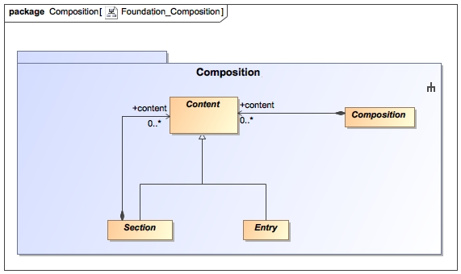

The Foundation Composition Package contains the base classes from which all CIMI classes are derived. Foundation classes have been harmonized with the ISO 13606 EHR Specification. Its two core components are (1) Composition (used to represent clinical documents or knowledge artifacts), and (2) Content used to represent clinical statement content or knowledge-based action definitions. Both Composition and Content inherit from Locatable and thus can be archetyped. Content in a composition may be a Section which can contain other nested Sections or Entries and Entry to represent an individual entry in a document.
